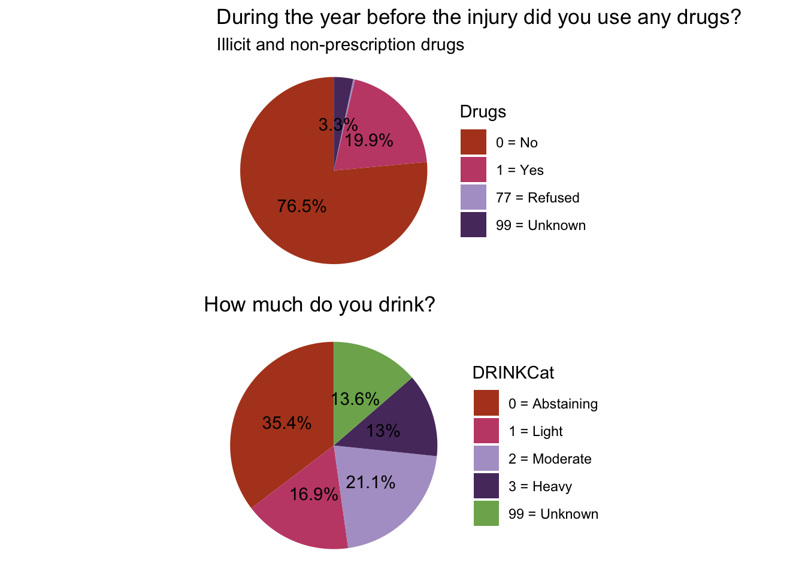

Then, import the the publicly available de-identified dataset from TBIMS (Form 1), and save the .csv file to a R studio project (no need to setwd).
Show the code
data <-read_csv("data/TBIMSForm1_Public_20250812.csv")
2 Data exploration
Let’s explore the data and make some descriptive analysis.
Show the code
summary(data)colnames(data)head(data)
What is the sample size (based on the unique identifier Mod1Id)?
Show the code
nrow(data) # number of individuals included in the dataset
[1] 19976
2.1 Demographics
2.1.1 Age
Age and Birth are considered protected health information (PHI) because the dataset includes several older participants who could be identified by their age. The AgeNoPHI variable collapses those aged 89y or older into a value of 777.
Show the code
table(data$AGENoPHI)
There is some incorrect coding. All individuals in the dataset should be 16y or older, and you cannot have a negative age at injury! For these individuals AgeNoPHI should be coded with “999 = Unknown”.
Show the code
data <- data %>%mutate(AGENoPHI =ifelse(AGENoPHI <16, 999, AGENoPHI))
Excluding those with missingness or coded 777, what is the average age at injury?
Show the code
data_age <- data %>%filter(AGENoPHI <100)summary(data_age$AGENoPHI)
Min. 1st Qu. Median Mean 3rd Qu. Max.
16.0 25.0 39.0 42.4 57.0 88.0
Let plot the distribution of age at injury (AGENoPHI).
Show the code
data %>%filter(AGENoPHI <777) %>%ggplot(aes(x=AGENoPHI)) +geom_density(fill ="#A8C5DD", color="white", alpha =0.8) +labs(x ="Age at Injury") +scale_x_continuous(breaks =seq(16, 88, by =3)) +theme_minimal()
Now AgeNoPHI by GCSCat
Show the code
data %>%filter(AGENoPHI <777) %>%filter(GCSCat %in%c(1, 2, 3)) %>%mutate(GCSCat =factor(GCSCat, labels =c("Mild", "Moderate", "Severe"))) %>%ggplot(aes(x=AGENoPHI, color=GCSCat, fill=GCSCat)) +geom_density(alpha =0.6) +scale_fill_met_d("Benedictus") +# Using MetBrewerscale_color_met_d("Benedictus") +# Using MetBrewerlabs(x ="Age at Injury") +scale_x_continuous(breaks =seq(16, 88, by =3)) +theme_minimal()
Important
The figures above excludes those aged over 88 and those with missing data on GCS total score on admission.
The RacePrimary variable has large counts with the code “66”, ie, “Variable did not exist” at the time of data collection as it was only added to the survey in 2023. The original Race variable (added in 1989) was archived in 2023 and is therefore not available in the publicly available dataset. Therefore I created a categorical variable for race using RaceWhtF, RaceBlkF, RacePIF, RaceIndF and RaceAsnF.
Variables SexF, CountryBirthF, RURALadm and EDUCATION have some missingness. Recode these variables to include missing values in the category “Unknown”, then transform into categorical variables.
Show the code
data <- data %>%mutate(SexF =ifelse(is.na(SexF), 99, SexF)) data<- data %>%mutate(RURALadm =ifelse(is.na(RURALadm), 99, RURALadm)) data <- data %>%mutate(CountryBirthF =ifelse(is.na(CountryBirthF), 99, CountryBirthF))data <- data %>%mutate(EDUCATION =ifelse(is.na(EDUCATION), 999, EDUCATION))
Now let’s create a streamlined data set to examine basic demographics (sex, country of birth, urbanicity, and educational attainment) using the modelsummary package.
Show the code
data_demo <- data %>% dplyr::select(Mod1Id, SexF, RaceCat, CountryBirthF, RURALadm, EDUCATION)str(data_demo) #check data type
Show the code
datasummary_skim(data_demo, type ="categorical")
N
%
SexF
1
5265
26.4
2
14699
73.6
99
12
0.1
RaceCat
0
5531
27.7
1
11045
55.3
2
2737
13.7
3
36
0.2
4
450
2.3
5
177
0.9
CountryBirthF
1
14058
70.4
2
2027
10.1
77
21
0.1
99
3870
19.4
RURALadm
1
4641
23.2
2
7892
39.5
3
4989
25.0
99
2454
12.3
EDUCATION
1
1230
6.2
2
3483
17.4
2.5
1164
5.8
3
603
3.0
3.5
5167
25.9
4
73
0.4
5
3502
17.5
6
976
4.9
7
2223
11.1
8
846
4.2
9
387
1.9
21
28
0.1
777
5
0.0
999
289
1.4
2.1.2 Sex
Show the code
sex <- data %>%mutate(SexF =factor(SexF, labels =c("Female", "Male", "Unknown"))) %>%ggplot(aes(x="", fill = SexF)) +geom_bar(stat ="count", width=1) +geom_text(aes(label =after_stat(paste0(round(count/sum(count)*100, 1), "%"))),stat ="count",position =position_stack(vjust =0.5)) +coord_polar("y", start =0) +theme_void() +scale_fill_met_d("Thomas") +# Using MetBrewerscale_color_met_d("Thomas") # Using MetBrewersex
2.1.3 Race
Show the code
race <- data %>%mutate(RaceCat =factor(RaceCat, labels =c("0 = Unknown/Missing", "1 = White", "2 = Black", "3 = Native Hawaiian or Pacific Islander", "4 = Asian", "5 = American Indian or Alaskan Native"))) %>%ggplot(aes(x="", fill = RaceCat)) +geom_bar(stat ="count", width=1) +geom_text(aes(label =after_stat(ifelse(count/sum(count) >0.05, paste0(round(count/sum(count)*100, 1), "%"), ""))),stat ="count",position =position_stack(vjust =0.5)) +coord_polar("y", start =0) +theme_void() +scale_fill_met_d("Thomas") +# Using MetBrewerscale_color_met_d("Thomas") # Using MetBrewerrace
cob <- data %>%mutate(CountryBirthF =factor(CountryBirthF, labels =c("1 = US", "2 = other than US", "77 = Refused", "99 = Unknown (including NAs)"))) %>%ggplot(aes(x="", fill = CountryBirthF)) +geom_bar(stat ="count", width=1) +geom_text(aes(label =after_stat(paste0(round(count/sum(count)*100, 1), "%"))),stat ="count",position =position_stack(vjust =0.5)) +coord_polar("y", start =0) +theme_void() +scale_fill_met_d("Thomas") +# Using MetBrewerscale_color_met_d("Thomas") # Using MetBrewercob
2.1.6 Educational attainment
Show the code
# categroise those with less than 10 years of school as those "still in school"data <- data %>%mutate(EduYears2 =case_when( EduYears <=10~1, EduYears ==11~2, EduYears ==12~3, EduYears ==13~4, EduYears ==14~5, EduYears ==15~6, EduYears ==16~7, EduYears ==17~8, EduYears ==18~9, EduYears ==19~10, EduYears ==20~11, EduYears ==21~12, EduYears ==666~666, EduYears ==999~999 ))data$EduYears2 <-as.factor(data$EduYears2)palette_edu <-rep(palette, length.out =nlevels(data$EduYears2))edu <-ggplot(data, aes(x = EduYears2, fill = EduYears2)) +geom_bar(color ="black") +scale_fill_manual(values = palette_edu, labels =c("1 = In HS (10y or less)","2 = 11 or 12 years: no diploma", "3 = HS diploma", "4 = Work towards Associates", "5 = Associates degree", "6 = Work towards Bachelors", "7 = Bachelors degree", "8 = Work towards Master's", "9 = Master's degree", "10 = Work towards Doctoral work", "11 = Doctoral level degree", "12 = Other","66 = Variable did not exist", "999 = Unknown")) +labs(x ="How many years of education have you completed?") +theme_minimal()edu
2.1.7 Employment
Show the code
data$EMPLOYMENT <-as.factor(data$EMPLOYMENT)palette_employ <-rep(palette, length.out =nlevels(as.factor(data$EMPLOYMENT)))ggplot(data, aes(x = EMPLOYMENT, fill = EMPLOYMENT)) +geom_bar(color ="black") +scale_fill_manual(values = palette_employ, labels =c("2 = Full Time Student", " 3 = Part time student", "4 = Special education", "5 = Competitively employed", "7 = Taking care of house or family", "8 = Special employed", "9 = Retired", "10 = Unemployed", "11 = Volunteer", "12 = Other", "99 = Unknown")) +labs(x ="At time of injury, what was your employment status?") +theme_minimal()
At the time of injury, most individuals are competitively employed (ie, minimum wage or greater, legal or illegal employment).
2.2 Injury characteristics
2.2.1 Cause of TBI
Now lets create descriptive statistics for the variable Cause, which denotes the cause of TBI.
Show the code
data <- data %>%mutate(Cause =ifelse(is.na(Cause), 999, Cause))
Show the code
palette_cause <-rep(palette, length.out =nlevels(as.factor(data$Cause)))data$Cause <-as.factor(data$Cause)labels <-c("1 = Motor Vehicle", "2 = Motorcycle", "3 = Bicylce", "4 = All-terrain vehicle", "5 = Other vehicular unclassified", "10 = Gunshot wound", "11 = Assault with a blunt instrument", "12 = Other violence", "13 = Water sports", "14 = Field/track sports", "15 = Gymnastics activities", "16 = Winter sports", "17 = Airsport", "18 = Other sports", "19 = Falls", "20 = Hit by falling/flying object", "21 = Pedestrian", "22 = Other unclassified", "999 = Unknown")ggplot(data, aes(x = Cause, fill = Cause)) +geom_bar(color ="black") +scale_fill_manual(values = palette_cause, labels = labels) +labs(x ="Cause of TBI") +theme_minimal()
2.2.1.1 Vehicular, violence, sports, falls, and other
Let’s combine some of the categories so we can compare the cause of injury by vehicular, violence, sports, falls, and other.
Show the code
data <- data %>%mutate(CauseCat =case_when( (Cause ==1| Cause ==2| Cause ==3| Cause ==4| Cause ==5) ~1, (Cause ==10| Cause ==11| Cause ==12) ~2, (Cause ==13| Cause ==14| Cause ==15| Cause ==16| Cause ==17| Cause ==18) ~3, (Cause ==19) ~4, (Cause ==20| Cause ==21| Cause ==22) ~5, (Cause ==999) ~999, TRUE~NA ))data$CauseCat <-as.factor(data$CauseCat)
Now we want to characterise the severity of the index TBI. Introduced in 1974, the Glasgow Coma Scale (GCS) is a structured tool used to assess level of consciousness in individual patients, and is still the most commonly used tool to define injury severity in clinical practice.
There is a high proportion of missingness (99 = “Unknown) for the variable GCSCat (23%). Moreover, the variable codes for GCSCat in the data dictionary are: 1 = severe; 2 = moderate; 3 = mild; 77 = intubated; 999 = missing. Who has the GCSCat of 8? Does this refer to those intubated?
Everyone with a GCSCat of 8 is coded as intubated on GCS. This could this be an error with the coding dictionary; instead of 77 those intubated have been assigned a value of 8.
Now lets explore why there is so much missingness for the GCSCat variable. Maybe there is some error with the coding from GCS total to GCSCat?
I created a new variable GCSCat2 which categorises the TBI severity into 1 = mild, 2 = moderate 3 = severe, 77 = sedated, 88 = intubated, and 999 = unknown, based of the GCS total scores variable. Now, how much missingness is there? Only 1.2%.
TBI can be complicated by additional injuries, including spinal cord injury. The variable SCI refers to complete and incomplete spinal injuries, (including conus medullaris and cauda equina syndromes, but does not include brachial or lumbar plexus injuries occurring outside the spinal canal).
Most patients (52%) did not have their intracranial pressure monitored (“88 = Not monitored”)
Show the code
data$CC_Hypertension <-as.factor(data$CC_Hypertension)palette_icp <-rep(palette, length.out =nlevels(as.factor(data$CC_Hypertension)))ICP <-ggplot(data, aes(x = CC_Hypertension, fill = CC_Hypertension)) +geom_bar(color ="black") +scale_fill_manual(values = palette_icp, labels =c("1 = Monitored, no ICP >=20 mm/HG", "2 = ICP fluctuations are evident (peaks of >=20 mm/Hg within 24h)", "3 = ICP fluctuations are evident (peaks >=20mm/Hg 24hr+)", "4 = ICP fluctuations are sustained (peaks >=20mm/Hg 24hr+)", "88 = Not Monitored", "99 = Unknown")) +labs(x ="Intracranial pressure") +theme_minimal() ICP
2.2.5 Disability
Disability at admission (DRSa) is measured using the Disability Rating Scale (DRS). The DRS is also used to assess the level of disability at each follow-up wave.
Show the code
data <- data %>%mutate(DRSa =ifelse(DRSa ==999, NA, DRSa))
What is the proportion of missingness for the DRS at admission?
data %>%filter(!is.na(DRSa)) %>%ggplot(aes(x ="", y=DRSa)) +# fill=name allow to automatically dedicate a color for each groupgeom_violin(fill ="#A8C5DD", color="white") +geom_boxplot(width=0.1, color="darkslategray4", alpha=0.2) +theme_minimal() +labs(x =NULL, y ="DRS score", title ="Distribution of DRS at admission (excluding NAs)")
2.2.6 History of TBI
Understanding what proportion of the sample had already experienced possible TBIs (that may have been previously undiagnosed) before the index TBI is important. Let’s first look at those with a reported history of head/neck injury with the variable TBIInjury.
data %>%ggplot(aes(x=INJYEAR)) +geom_density(fill ="#A8C5DD", color="white", alpha =0.8) +labs(x ="Injury Year") +scale_x_continuous(breaks =seq(1988, 2023, by =3)) +theme_minimal()
2.3 Psychiatric conditions
2.3.1 Psychiatric treatment
Now lets examine what proportion of the sample had psychiatric treatment and hospitalisation before the TBI. First, does the variable PsyHosp have any missingness? If so reassign them to the “NA” category.
Show the code
as.data.frame(table(is.na(data$PsyHosp))) %>%gt() %>%cols_label(Var1 ="Missingness",Freq ="Count")# 30 individuals with NA
Missingness
Count
FALSE
19946
TRUE
30
Show the code
# reassign these individuals "NA"data <- data %>%mutate(PsyHosp =ifelse(is.na(PsyHosp), 88, PsyHosp))
Show the code
psych <- data %>%mutate(PsyHosp =factor(PsyHosp, labels =c("0 = No", "1 = Yes", "66 = Variable did not exist", "77 = Refused", "88 = NA", "99 = Unknown"))) %>%ggplot(aes(x="", fill = PsyHosp)) +geom_bar(stat ="count", width=1) +geom_text(aes(label =after_stat(ifelse(count/sum(count) >0.03, paste0(round(count/sum(count)*100, 1), "%"), ""))),stat ="count",position =position_stack(vjust =0.5)) +coord_polar("y", start =0) +theme_void() +scale_fill_met_d("Thomas") +# Using MetBrewerscale_color_met_d("Thomas") +ggtitle("Have you ever been hospitalised for a psychiatric problem?")psych
2.3.2 Psychiatric treatment
Show the code
table(is.na(data$MntlEver)) # 31 individuals with NA # reassign these individuals "NA"data <- data %>%mutate(MntlEver =ifelse(is.na(MntlEver), 99, MntlEver)) table(data$MntlEver)
Show the code
ment <- data %>%mutate(MntlEver =factor(MntlEver, labels =c("0 = No", "1 = Yes", "66 = Variable did not exist", "77 = Refused", "99 = Unknown"))) %>%ggplot(aes(x="", fill = MntlEver)) +geom_bar(stat ="count", width=1) +geom_text(aes(label =after_stat(ifelse(count/sum(count) >0.03, paste0(round(count/sum(count)*100, 1), "%"), ""))),stat ="count",position =position_stack(vjust =0.5)) +coord_polar("y", start =0) +theme_void() +scale_fill_met_d("Thomas") +# Using MetBrewerscale_color_met_d("Thomas") +ggtitle("Have you ever received treatment for any mental health problems?",subtitle ="Examples include depression, anxiety, schizophrenia, and alcohol/drug abuse ")ment
2.3.3 Suicide attempt
Show the code
table(is.na(data$Suicide)) # 33 individuals with NA # reassign these individuals "NA"data <- data %>%mutate(Suicide =ifelse(is.na(Suicide), 99, Suicide)) table(data$Suicide)
Show the code
suicide <- data %>%mutate(Suicide =factor(Suicide, labels =c("0 = No", "1 = Yes", "66 = Variable did not exist", "77 = Refused", "99 = Unknown"))) %>%ggplot(aes(x="", fill = Suicide)) +geom_bar(stat ="count", width=1) +geom_text(aes(label =after_stat(ifelse(count/sum(count) >0.03, paste0(round(count/sum(count)*100, 1), "%"), ""))),stat ="count",position =position_stack(vjust =0.5)) +coord_polar("y", start =0) +theme_void() +scale_fill_met_d("Thomas") +# Using MetBrewerscale_color_met_d("Thomas") +ggtitle("Have you ever attempted suicide?")suicide
2.3.4 Substance misuse
Let us now look at substance misuse (drug and alcohol use) prior to the injury. Substance problem use is measured using the variable PROBLEMUse, where 0 = no, 1 = yes, 77 = refused, and 99 = unknown.
Show the code
#table(is.na(data$PROBLEMUse)) # no NAsas.data.frame(prop.table(table(data$PROBLEMUse))*100) %>%gt() %>%cols_label(Var1 ="Alcohol misuse",Freq ="Count")
Alcohol misuse
Count
0
31.372647
1
36.979375
77
2.017421
99
29.630557
37% reported substance problem use during the month prior to the index TBI. However, with the variable PROBLEMUse, there is a high proportion of unknown (30%).
Maybe the high missingness is because the PROBLEMUse variable wasn’t introduced until 1999? Lets check by creating a subsample with only those with an injury after 1999.
Show the code
data_1999 <- data %>%filter(INJYEAR >1999)as.data.frame(prop.table(table(data$PROBLEMUse))*100) %>%gt() %>%cols_label(Var1 ="Alcohol misuse",Freq ="Count")
Alcohol misuse
Count
0
31.372647
1
36.979375
77
2.017421
99
29.630557
That doesn’t seem to be the issue…
Important
The variable PROBLEMUse only includes data from those who drank (rather than from all people in the dataset).
The drinking category (DRINKCat) has lower levels of missingness.
Show the code
drink <- data %>%mutate(DRINKCat =factor(DRINKCat, labels =c("0 = Abstaining", "1 = Light", "2 = Moderate", "3 = Heavy", "99 = Unknown"))) %>%ggplot(aes(x="", fill = DRINKCat)) +geom_bar(stat ="count", width=1) +geom_text(aes(label =after_stat(ifelse(count/sum(count) >0.03, paste0(round(count/sum(count)*100, 1), "%"), ""))),stat ="count",position =position_stack(vjust =0.5)) +coord_polar("y", start =0) +theme_void() +scale_fill_met_d("Thomas") +# Using MetBrewerscale_color_met_d("Thomas") +ggtitle("How much do you drink?")drink
What about the problematic use of drugs other than alcohol?
Show the code
table(is.na(data$Drugs)) # 81 individual with NAs, recode these as 99data <- data %>%mutate(Drugs =ifelse(is.na(Drugs), 99, Drugs))table(data$Drugs)prop.table(table(data$Drugs))*100
Show the code
drugs <- data %>%mutate(Drugs =factor(Drugs, labels =c("0 = No", "1 = Yes", "77 = Refused", "99 = Unknown"))) %>%ggplot(aes(x="", fill = Drugs)) +geom_bar(stat ="count", width=1) +geom_text(aes(label =after_stat(ifelse(count/sum(count) >0.03, paste0(round(count/sum(count)*100, 1), "%"), ""))),stat ="count",position =position_stack(vjust =0.5)) +coord_polar("y", start =0) +theme_void() +scale_fill_met_d("Thomas") +# Using MetBrewerscale_color_met_d("Thomas") +ggtitle("During the year before the injury did you use any drugs?", subtitle ="Illicit and non-prescription drugs")drugs
20% reported illict drug use. The variable (Drugs) also has lower levels of missingness (3%).
Note
Items measuring PTSD, Dementia, and Parkinson’s disease were added recently (2024-10-01) and therefore no one in the publicly available dataset has information on these disorders at baseline.
Note
The measures of anxiety (GAD-2) and depression (PHQ-2) are only administered at each follow-up.
2.4 Cognitive functioning
Cognitive functioning was assessed using the Brief Test of Adult Cognition by Telephone (BTACT)
91.2% of individual had missing data for B3TCOMP – the BTACT total score standardised by age, sex and education. Let’s examine the overall completion code (BTACTTCC) to see if that also reports a high proportion of missingness.
Show the code
data$BTACTTCC <-as.factor(data$BTACTTCC)palette_btact <-rep(palette, length.out =nlevels(data$BTACTTCC))btact <-ggplot(data, aes(x = BTACTTCC, fill = BTACTTCC)) +geom_bar(color ="black") +scale_fill_manual(values = palette_btact, labels =c("1 = test administered in full - results valid", "2 = test attempted but not completed due to cognitive/neurological reasons", "3 = test attempted but not completed due to non-neurological physical reasons", "4 = test attempted but not completed refusal to continue", "5 = test attempted but not completed non-english speaking patient", "6 = test attempted but not completed logistical reasons, other reasons", "7 = test not attempted due to the severity of cognitive/neurological deficits", "8 = test not attempted due to non-neurological physical reasons", "9 - test not attempted refusal", "10 = test not attempted non-english speaking patient", "11 = test attempted logistical reasons other reasons", "12 = test not attempted no consented within window", "13 = test not attempted", "16 = other", "666 = Variable did not exist")) +theme_minimal()btact
The variable BTACTTCC was introduced in October 2017, which may explain the high levels of missingness. It seems that the BTACT was introduced recently, and older measures of neuropsych such as the COWAT, DIGIT SPAN, GOAT, PEGBOARD, REY (amongst others) were archived (and therefore, are not available in the publicly available data).
2.5 Learning disability
Now lets investigate the prevalence of learning disabilities in the cohort.
Show the code
# is there any missingness?table(is.na(data$SpEd)) # 86 individuals with missing data for learning disability. Include these individuals in the 99 or unknown categorydata <- data %>%mutate(SpEd =ifelse(is.na(SpEd), 99, SpEd))
Show the code
sped <- data %>%mutate(SpEd=factor(SpEd, labels =c("0 = No", "1 = Yes", "66 = Variable did not exist", "77 = Refused", "99 = Unknown"))) %>%ggplot(aes(x="", fill = SpEd)) +geom_bar(stat ="count", width=1) +geom_text(aes(label =after_stat(ifelse(count/sum(count) >0.03, paste0(round(count/sum(count)*100, 1), "%"), ""))),stat ="count",position =position_stack(vjust =0.5)) +coord_polar("y", start =0) +theme_void() +scale_fill_met_d("Thomas") +# Using MetBrewerscale_color_met_d("Thomas") +ggtitle("While in school, were you classified as a special education student?")sped
7.3% of participants were classified as having a learning difficulty as a student prior to the TBI.
3 Cohort descriptives
Here, I provide a brief overview of the cohort descriptives at the time of TBI admission (Form 1). The sample includes 19 976 individuals.
The publicly available data collapses those aged over 88 into one group in order to ensure that the data is fully de-identified (and does not disclose the identity of older patients). Therefore, if you exclude those with missing data (n = 37) and those aged over 88 (n = 198), the median age at injury is 39 [IQR, 25-57]. The average age at injury is 42.4.
Show the code
data_age <- data %>%filter(AGENoPHI <100)summary(data_age$AGENoPHI)
Min. 1st Qu. Median Mean 3rd Qu. Max.
16.0 25.0 39.0 42.4 57.0 88.0
Show the code
data %>%filter(AGENoPHI >=16& AGENoPHI <=25 )
The age at injury by GCS score is shown below.
Show the code
data %>%filter(AGENoPHI <777) %>%filter(GCSCat2 %in%c(1, 2, 3, 77, 88)) %>%mutate(GCSCat2 =factor(GCSCat2, labels =c("1 = Mild", "2 = Moderate", "3 = Severe", "77 = Sedated", "88 = Intubated"))) %>%ggplot(aes(x=AGENoPHI, color=GCSCat2, fill=GCSCat2)) +geom_density(alpha =0.6) +scale_fill_met_d("Benedictus") +# Using MetBrewerscale_color_met_d("Benedictus") +# Using MetBrewerlabs(x ="Age at Injury") +scale_x_continuous(breaks =seq(16, 88, by =3)) +theme_minimal()
Important
The figure above excludes those aged over 88 and those with missing data on GCS on admission.
The majority of TBI cases in the database are white males born in the US. Half of the injuries (49%) were caused by vehicular crashes. One third of injuries (33%) were classified as severe and 22% of participants were chemically paralyzed/placed in a chemically induced coma. Over 7% had a pre-injury history of learning and or behavioural problems in school.
There is high levels of missingness (37%) for the variables of psychiatric hospitalisation (PsyHosp), mental health treatment (MntlEver) and suicide attempt (Suicide) as they were only added to the survey in 2007.
Show the code
cowplot::plot_grid(psych, suicide, ment, nrow =3)
1 in 5 individuals reported using illict or non-prescription drugs prior to the TBI.
Show the code
cowplot::plot_grid(drugs, drink, nrow =2)

4 Subsample: 2008-2023
The TBIMS dataset includes a large sample of individuals admitted to inpatient services between 1987-2023. If we wanted a more recent and contemporaneous sample we could restrict the sample to those who sustained an TBI between 2008 and 2023. This would still leave up to 15 years of follow-up and avoiding missingness for the psychiatric variables not introduced until 2007.
Show the code
data <-read_csv("data/TBIMSForm1_Public_20250812.csv")data_recent <- data %>%filter(INJYEAR >=2008)
This reduces the cohort down to 12 281 individuals.
Show the code
nrow(data_recent)
[1] 12281
I start off by cleaning the data quickly and creating figures on this smaller (and more recent) sample.
Show the code
# there is some incorrect coding. All individuals in the dataset are over 16y, and you cannot have a negative age at injury! These individuals should be grouped with the "999 = Unknown" category.## those in the PHI category of 89+ and those with an "Unknown" age are recoded as NAdata_recent <- data_recent %>%mutate(AGENoPHI =ifelse(AGENoPHI <16, 999, AGENoPHI))data_recent <- data_recent %>%mutate(AGENoPHI =ifelse(AGENoPHI >100, NA, AGENoPHI))# address missingness ## if a variable has NAs this is recoded to 99 or "Unknown" (or 88 or "NA" for the variable PsyHosp) as specified in the data dictionarydata_recent <- data_recent %>%mutate(RURALadm =ifelse(is.na(RURALadm), 99, RURALadm)) data_recent <- data_recent %>%mutate(CountryBirthF =ifelse(is.na(CountryBirthF), 99, CountryBirthF))data_recent <- data_recent %>%mutate(EDUCATION =ifelse(is.na(EDUCATION), 999, EDUCATION)) data_recent <- data_recent %>%mutate(PsyHosp =ifelse(is.na(PsyHosp), 88, PsyHosp)) data_recent <- data_recent %>%mutate(MntlEver =ifelse(is.na(MntlEver), 99, MntlEver))data_recent <- data_recent %>%mutate(Suicide =ifelse(is.na(Suicide), 99, Suicide)) data_recent <- data_recent %>%mutate(SpEd =ifelse(is.na(SpEd), 99, SpEd))data_recent <- data_recent %>%mutate(AGENoPHI =ifelse(AGENoPHI <16, 999, AGENoPHI))# categroise those with less than 10 years of school as those "still in school"data_recent <- data_recent %>%mutate(EduYears2 =case_when( EduYears <=10~1, EduYears ==11~2, EduYears ==12~3, EduYears ==13~4, EduYears ==14~5, EduYears ==15~6, EduYears ==16~7, EduYears ==17~8, EduYears ==18~9, EduYears ==19~10, EduYears ==20~11, EduYears ==21~12, EduYears ==666~669, EduYears ==999~999 ))## change the data type to factor as these are categorical variablesdata_recent$SexF <-as.factor(data_recent$SexF)data_recent$CountryBirthF <-as.factor(data_recent$CountryBirthF)data_recent$RURALadm <-as.factor(data_recent$RURALadm)data_recent$EduYears2 <-as.factor(data_recent$EduYears2)# categorise racedata_recent <- data_recent %>%mutate(RaceCat =case_when( RaceWhtF ==1~1, RaceBlkF ==1~2, RacePIF ==1~3, RaceAsnF ==1~4, RaceIndF ==1~5, TRUE~0 ) )data_recent$RaceCat <-as.factor(data_recent$RaceCat)# combine the cause of injury categories into: vehicular, violence, sports, falls, other, and unknowndata_recent <- data_recent %>%mutate(CauseCat =case_when( (Cause ==1| Cause ==2| Cause ==3| Cause ==4| Cause ==5) ~1, (Cause ==10| Cause ==11| Cause ==12) ~2, (Cause ==13| Cause ==14| Cause ==15| Cause ==16| Cause ==17| Cause ==18) ~3, (Cause ==19) ~4, (Cause ==20| Cause ==21| Cause ==22) ~5, (Cause ==999) ~999, TRUE~999 ))data_recent$CauseCat <-as.factor(data_recent$CauseCat)# recode the GCS variable into a categorical variable based on the criteria: mild (scores ≥ 13), moderate (scores 9–12), or severe (scores 3–8)data_recent <- data_recent %>%mutate(GCSCat2 =case_when( GCS <9~1, (GCS >=9& GCS <13) ~2, (GCS >=13& GCS <77) ~3, GCS ==77~77, GCS ==88~88, GCS ==999~999,TRUE~ GCSCat ))data_recent$GCSCat2 <-as.factor(data_recent$GCSCat2)
Show the code
# create figuresage <- data_recent %>%filter(!is.na(AGENoPHI)) %>%ggplot(aes(x=AGENoPHI)) +geom_density(fill ="#A8C5DD", color="white", alpha =0.8) +labs(x ="Age at Injury") +scale_x_continuous(breaks =seq(16, 88, by =3)) +theme_minimal()palette_sev <-rep(palette, length.out =nlevels(as.factor(data_recent$GCSCat2)))gcs_recent <-ggplot(data_recent, aes(x = GCSCat2, fill = GCSCat2)) +geom_bar(color ="black") +scale_fill_manual(values = palette_sev, labels =c("1 = Mild", "2 = Moderate", "3 = Severe", "77 = Sedated", "88 = Intubated", "999 = Missing")) +labs(x ="Injury Severity") +theme_minimal() age_cause_recent <- data_recent %>%filter(!is.na(AGENoPHI)) %>%filter(GCSCat2 %in%c(1, 2, 3, 77, 88)) %>%mutate(GCSCat2 =factor(GCSCat2, labels =c("Mild", "Moderate", "Severe", "Sedated", "Intubated"))) %>%ggplot(aes(x=AGENoPHI, color=GCSCat2, fill=GCSCat2)) +geom_density(alpha =0.6) +scale_fill_met_d("Benedictus") +# Using MetBrewerscale_color_met_d("Benedictus") +# Using MetBrewerlabs(x ="Age at Injury") +scale_x_continuous(breaks =seq(16, 88, by =3)) +theme_minimal()palette_cause <-rep(palette, length.out =nlevels(as.factor(data_recent$CauseCat)))cause_recent <-ggplot(data_recent, aes(x = CauseCat, fill = CauseCat)) +geom_bar(color ="black") +scale_fill_manual(values = palette_cause, labels =c("1 = Vehicular", "2 = Violence", "3 = Sports", "4 = Falls", "5 = Other", "999 = Unknown")) +labs(x ="Injury Severity") +theme_minimal() sex_recent <- data_recent %>%mutate(SexF =factor(SexF, labels =c("Female", "Male", "Unknown"))) %>%ggplot(aes(x="", fill = SexF)) +geom_bar(stat ="count", width=1) +geom_text(aes(label =after_stat(ifelse(count/sum(count) >0.03, paste0(round(count/sum(count)*100, 1), "%"), ""))),stat ="count",position =position_stack(vjust =0.5)) +coord_polar("y", start =0) +theme_void() +scale_fill_met_d("Thomas") +# Using MetBrewerscale_color_met_d("Thomas") # Using MetBrewerrace_recent <- data_recent %>%mutate(RaceCat =factor(RaceCat, labels =c("0 = Unknown/Missing", "1 = White", "2 = Black", "3 = Native Hawaiian or Pacific Islander", "4 = Asian", "5 = American Indian or Alaskan Native"))) %>%ggplot(aes(x="", fill = RaceCat)) +geom_bar(stat ="count", width=1) +geom_text(aes(label =after_stat(ifelse(count/sum(count) >0.03, paste0(round(count/sum(count)*100, 1), "%"), ""))),stat ="count",position =position_stack(vjust =0.5)) +coord_polar("y", start =0) +theme_void() +scale_fill_met_d("Thomas") +# Using MetBrewerscale_color_met_d("Thomas") # Using MetBrewerurban_recent <- data_recent %>%mutate(RURALadm =factor(RURALadm, labels =c("1 = Rural", "2 = Urban", "3 = Suburban", "99 = Unknown"))) %>%ggplot(aes(x="", fill = RURALadm)) +geom_bar(stat ="count", width=1) +geom_text(aes(label =after_stat(ifelse(count/sum(count) >0.03, paste0(round(count/sum(count)*100, 1), "%"), ""))),stat ="count",position =position_stack(vjust =0.5)) +coord_polar("y", start =0) +theme_void() +scale_fill_met_d("Thomas") +# Using MetBrewerscale_color_met_d("Thomas") # Using MetBrewercob_recent <- data_recent %>%mutate(CountryBirthF =factor(CountryBirthF, labels =c("1 = US", "2 = other than US", "77 = Refused", "99 = Unknown (including NAs)"))) %>%ggplot(aes(x="", fill = CountryBirthF)) +geom_bar(stat ="count", width=1) +geom_text(aes(label =after_stat(ifelse(count/sum(count) >0.03, paste0(round(count/sum(count)*100, 1), "%"), ""))),stat ="count",position =position_stack(vjust =0.5)) +coord_polar("y", start =0) +theme_void() +scale_fill_met_d("Thomas") +# Using MetBrewerscale_color_met_d("Thomas") # Using MetBrewersped_recent <- data_recent %>%mutate(SpEd=factor(SpEd, labels =c("0 = No", "1 = Yes", "66 = Variable did not exist", "77 = Refused", "99 = Unknown"))) %>%ggplot(aes(x="", fill = SpEd)) +geom_bar(stat ="count", width=1) +geom_text(aes(label =after_stat(ifelse(count/sum(count) >0.03, paste0(round(count/sum(count)*100, 1), "%"), ""))),stat ="count",position =position_stack(vjust =0.5)) +coord_polar("y", start =0) +theme_void() +scale_fill_met_d("Thomas") +# Using MetBrewerscale_color_met_d("Thomas") +ggtitle("While in school, were you classified as a special education student?")palette_edu <-rep(palette, length.out =nlevels(data_recent$EduYears2))edu_recent <-ggplot(data_recent, aes(x = EduYears2, fill = EduYears2)) +geom_bar(color ="black") +scale_fill_manual(values = palette_edu, labels =c("1 = In HS (10y or less)","2 = 11 or 12 years: no diploma", "3 = HS diploma", "4 = Work towards Associates", "5 = Associates degree", "6 = Work towards Bachelors", "7 = Bachelors degree", "8 = Work towards Master's", "9 = Master's degree", "10 = Work towards Doctoral work", "11 = Doctoral level degree", "12 = Other", "999 = Unknown")) +theme_minimal()psych_recent <- data_recent %>%mutate(PsyHosp =factor(PsyHosp, labels =c("0 = No", "1 = Yes", "66 = Variable did not exist", "77 = Refused", "88 = NA", "99 = Unknown"))) %>%ggplot(aes(x="", fill = PsyHosp)) +geom_bar(stat ="count", width=1) +geom_text(aes(label =after_stat(ifelse(count/sum(count) >0.03, paste0(round(count/sum(count)*100, 1), "%"), ""))),stat ="count",position =position_stack(vjust =0.5)) +coord_polar("y", start =0) +theme_void() +scale_fill_met_d("Thomas") +# Using MetBrewerscale_color_met_d("Thomas") +ggtitle("Have you ever been hospitalised for a psychiatric problem?")ment_recent <- data_recent %>%mutate(MntlEver =factor(MntlEver, labels =c("0 = No", "1 = Yes", "66 = Variable did not exist", "77 = Refused", "99 = Unknown"))) %>%ggplot(aes(x="", fill = MntlEver)) +geom_bar(stat ="count", width=1) +geom_text(aes(label =after_stat(ifelse(count/sum(count) >0.03, paste0(round(count/sum(count)*100, 1), "%"), ""))),stat ="count",position =position_stack(vjust =0.5)) +coord_polar("y", start =0) +theme_void() +scale_fill_met_d("Thomas") +# Using MetBrewerscale_color_met_d("Thomas") +ggtitle("Have you ever received treatment for any mental health problems?",subtitle ="Examples include depression, anxiety, schizophrenia, and alcohol/drug abuse ")suicide_recent <- data_recent %>%mutate(Suicide =factor(Suicide, labels =c("0 = No", "1 = Yes", "77 = Refused", "99 = Unknown"))) %>%ggplot(aes(x="", fill = Suicide)) +geom_bar(stat ="count", width=1) +geom_text(aes(label =after_stat(ifelse(count/sum(count) >0.03, paste0(round(count/sum(count)*100, 1), "%"), ""))),stat ="count",position =position_stack(vjust =0.5)) +coord_polar("y", start =0) +theme_void() +scale_fill_met_d("Thomas") +# Using MetBrewerscale_color_met_d("Thomas") +ggtitle("Have you ever attempted suicide?")drink_recent <- data_recent %>%mutate(DRINKCat =factor(DRINKCat, labels =c("0 = Abstaining", "1 = Light", "2 = Moderate", "3 = Heavy", "99 = Unknown"))) %>%ggplot(aes(x="", fill = DRINKCat)) +geom_bar(stat ="count", width=1) +geom_text(aes(label =after_stat(ifelse(count/sum(count) >0.03, paste0(round(count/sum(count)*100, 1), "%"), ""))),stat ="count",position =position_stack(vjust =0.5)) +coord_polar("y", start =0) +theme_void() +scale_fill_met_d("Thomas") +# Using MetBrewerscale_color_met_d("Thomas") +ggtitle("How much do you drink?")drugs_recent <- data_recent %>%mutate(Drugs =factor(Drugs, labels =c("0 = No", "1 = Yes", "77 = Refused", "99 = Unknown"))) %>%ggplot(aes(x="", fill = Drugs)) +geom_bar(stat ="count", width=1) +geom_text(aes(label =after_stat(ifelse(count/sum(count) >0.03, paste0(round(count/sum(count)*100, 1), "%"), ""))),stat ="count",position =position_stack(vjust =0.5)) +coord_polar("y", start =0) +theme_void() +scale_fill_met_d("Thomas") +# Using MetBrewerscale_color_met_d("Thomas") +ggtitle("During the year before the injury did you use any drugs", subtitle ="Non-prescription or illicit drugs")
4.1 Descriptives
The sample includes 12 281 individuals who were admitted to inpatient services for a traumatic brain injury between 2008 and 2023. The median age at injury is 43 [IQR, 27-61]. The mean age at injury is 44.99.
Show the code
nrow(data_recent)
[1] 12281
Show the code
summary(data_recent$AGENoPHI)
Min. 1st Qu. Median Mean 3rd Qu. Max. NA's
16.00 27.00 43.00 44.99 61.00 88.00 206
The figures above exclude those with missing data on age at injury and GCS on admission.
The majority of TBI cases in this sample are white males born in the US. There is substantial missingness forRaceCat (19%) as this variable was only introduced in October 2012.
In the cohort, 29% of participants held a high school diploma, 26% were still in school, and 12% had a Bachelors diploma; 7% of all participants had a pre-injury history of learning and or behavioural problems in school.
Show the code
edu_recent
Show the code
sped_recent
Show the code
as.data.frame(prop.table(table(data_recent$EduYears2))*100) %>%gt() %>%cols_label(Var1 ="Years of Education",Freq ="Percentage (%)" )
Years of Education
Percentage (%)
1
15.0061200
2
10.4610363
3
29.1717666
4
9.2125663
5
5.7527540
6
8.7229702
7
11.6605467
8
1.2974296
9
4.7572419
10
0.4732762
11
2.5132599
12
0.1387189
999
0.8323133
The most common cause of injury were vehicular crashes (45%) and most injuries were severe or resulted in the patient being chemically paralyzed/placed in a chemically induced coma.
as.data.frame(prop.table(table(data_recent$CauseCat))*100) %>%gt() %>%cols_label(Var1 ="Cause of TBI",Freq ="Percentage (%)" )
Cause of TBI
Percentage (%)
1
44.5322042
2
9.0139239
3
1.9868089
4
34.5981598
5
9.6001954
999
0.2687078
Regarding psychiatric comorbidities, 7% of the sample had been hospitalised for a psychiatric problem prior to the TBI, 22% had sought help for mental health problems, and 5% had attempted suicide; 18% had reported using illict or non-prescription drugs in the year before the injury.